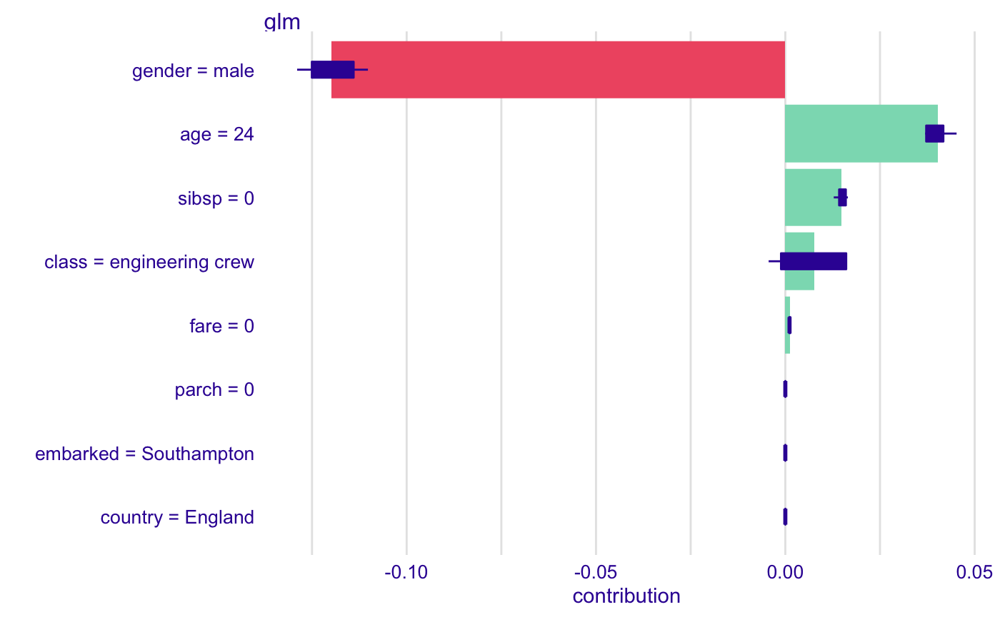

vignette_iBreakDown_description
vignette_iBreakDown_description.RmdIntroduction
The goal of explaining a model’s prediction is to relate the feature values of an instance to its model prediction in an understandable way.
In iBreakDown package we can explain a model by generating a break_down() explanation - it shows contributions of variables to the prediction made by the model - or a break_down_uncertainty() / shap() explanation - shows the average contribution of variables to the prediction made by the model. It is generated by iterating the break_down algorithm.
These tools, however extremely useful, in some context may lack interpretability e.g. when a domain expert is unable to interpret the more or less complicated plots being displayed.
Generic describe() function generates natural language description for the above mentioned methods increasing their interpretability, thus usability, what is crucial for xAI methods.
How to generate natural language descriptions
First we load all the packages.
We generate a model to be explained based on the titanic dataset and we generate a DALEX explainer for it.
titanic <- na.omit(titanic)
model_titanic_glm <- glm(titanic$survived == "yes" ~ age + gender + class + fare + sibsp,
data = titanic[ ,-9], family = "binomial")
explain_titanic_glm <- explain(model_titanic_glm,
data = titanic[,-9],
y = titanic$survived == "yes",
label = "glm")
#> Preparation of a new explainer is initiated
#> -> model label : glm
#> -> data : 2099 rows 8 cols
#> -> target variable : 2099 values
#> -> predict function : yhat.glm will be used ([33mdefault[39m)
#> -> predicted values : numerical, min = 0.009479803 , mean = 0.3244402 , max = 0.9742069
#> -> residual function : difference between y and yhat ([33mdefault[39m)
#> -> residuals : numerical, min = -0.9742069 , mean = -2.864556e-10 , max = 0.9662286
#> [32mA new explainer has been created![39mNow we randomly select a passanger and generate a break_down description. We keep the distributions to display more informative descriptions. Unfortunatelly, interactions are not supported yet.
passanger <- titanic[sample(nrow(titanic), 1) ,-9]
bd_glm <- break_down(explain_titanic_glm, passanger,
keep_distributions = TRUE)
plot(bd_glm) We explain the model with
We explain the model with break_down() function. The picture that emerges is not complex but it lacks a clear narration. We can describe the plot by calling describe().
describe(bd_glm,
label = "the selected passanger survives with probability")
#> Glm predicts, that the selected passanger survives with probability 0.269 which is lower than the average model prediction.
#>
#> The most important variable that decrease the prediction is gender.
#> The most important variables that increase the prediction are age, sibsp.
#>
#> Other variables are with less importance. The contribution of all other variables is 0 .If we want to generate a similar description for a shap explainer it is simple.
 We set display_numbers = TRUE for a more detailed explanation and display_shap = TRUE for displaying details about shap explainer.
describe(shap_glm,
label = "the selected passanger survives with probability",
display_shap = TRUE,
display_numbers = T)
#> Glm predicts, that the selected passanger survives with probability 0.269 which is lower than the average model prediction 0.324.
#>
#> The most important variable is gender. It decreases the prediction by 0.12.
#> The second most important variable is age. It increases the prediction by 0.04.
#> The third most important variable is sibsp. It increases the prediction by 0.015.
#> The average contribution of all the above variable's is significant.
#>
#> Other variables are with less importance. The contribution of all other variables is 0.009 .